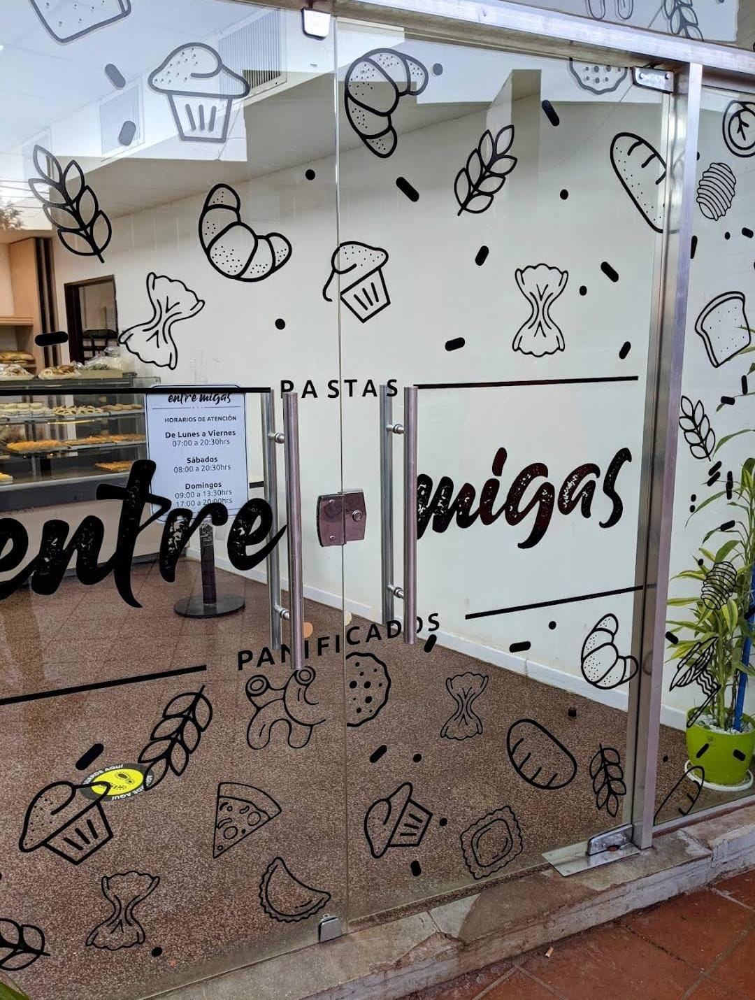

SOMOS 100% ARTESANALES
¿Sabías que no usamos absolutamente ningún conservante,
ni mejoradores, ni esencias? ¿Qué pelamos los limones uno
por uno a mano, lo mismo con las manzanas, los huevos, las
naranjas, y todo lo que utilizamos? ¿Qué unicamente
trabajamos harina 0000 y que nuestras medialunas se
hacen solo con manteca?
